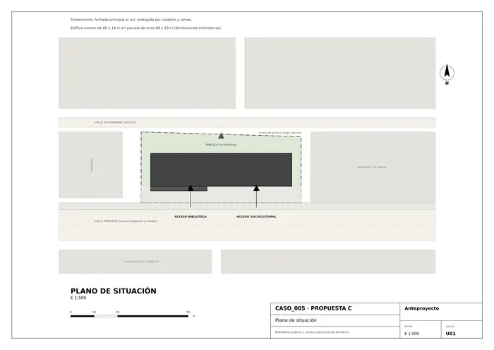
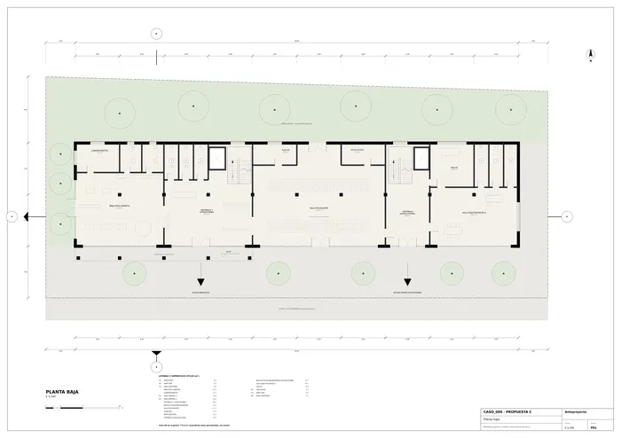
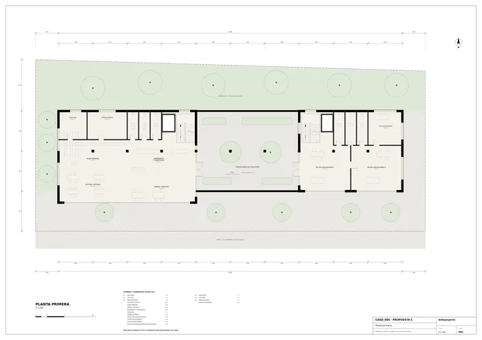
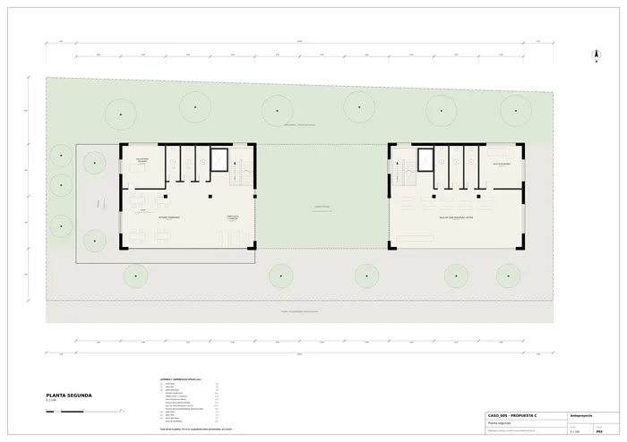
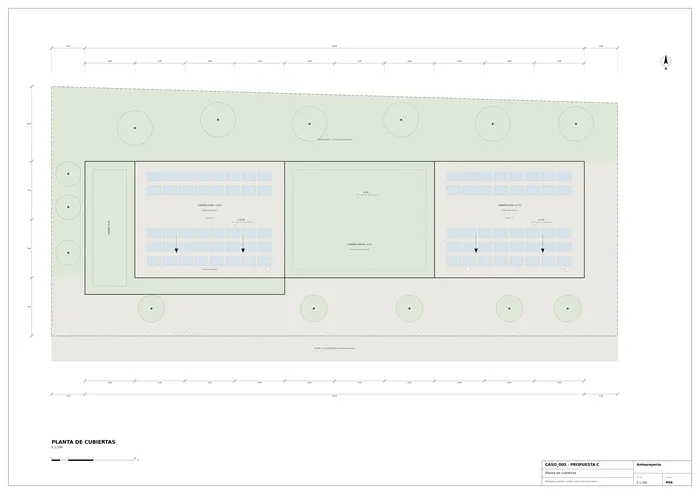
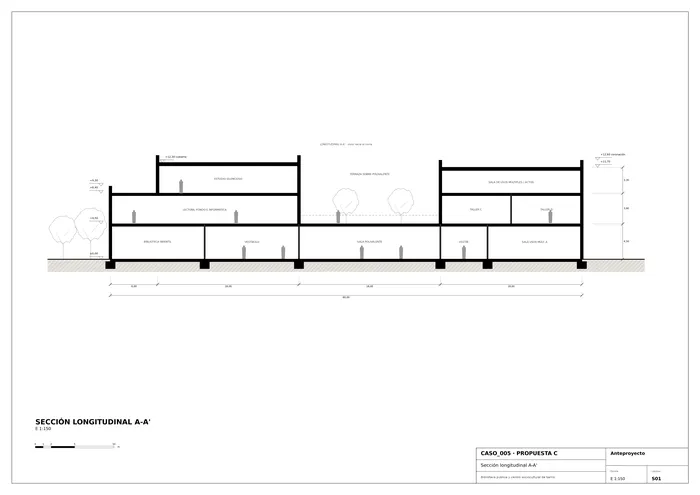
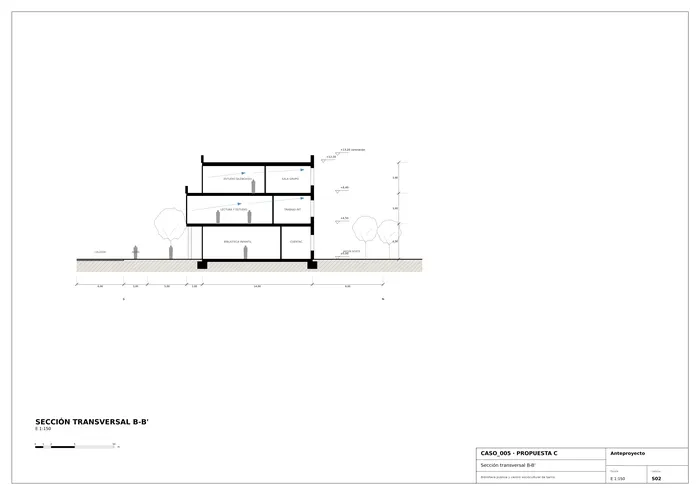
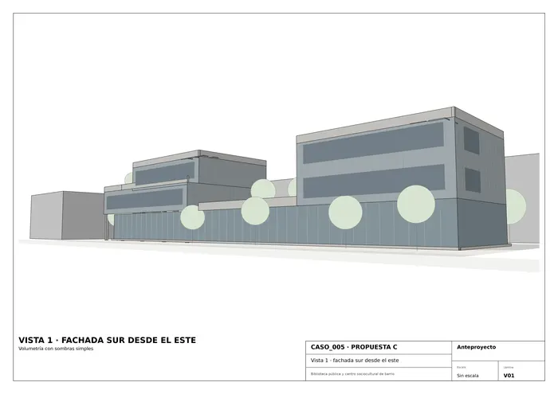
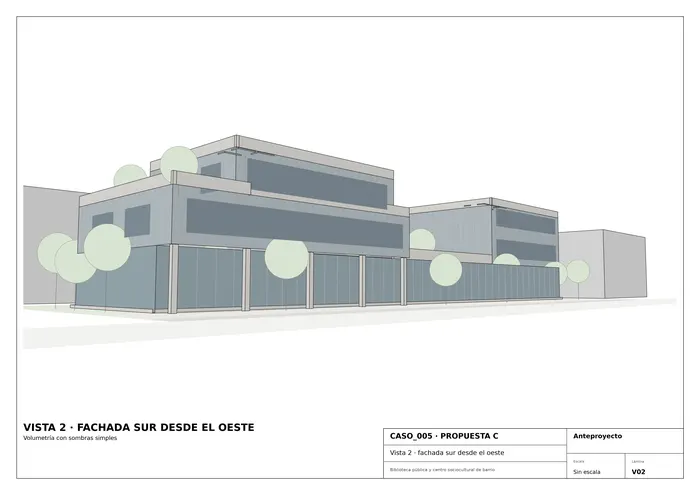

Caso 005 · Singular Studio (J. Moragues; F. Nieto; R. Paternina) · 2014 · equipamiento cultural
A partir del boceto (volumen alargado fragmentado en piezas de distinta altura sobre una base baja con pilares) se propone una base transparente y continua de 60 x 14 m sobre la que "aterrizan" tres piezas opacas, revestidas de lamas verticales de tono gris azulado. La base es el espacio público del barrio (vestíbulo, biblioteca infantil, sala polivalente, vestíbulo sociocultural); las piezas son los espacios de concentración (estudio, talleres, salas de actos). Entre la pieza de la biblioteca (oeste) y la del centro sociocultural (este) queda un hueco libre: la sala polivalente remata en una terraza-jardín a +4,50 m que une visualmente ambos usos y sirve de lectura exterior.
Parcela de unos 68 x 29 m con el eje mayor este-oeste y acera al sur (acceso principal) y calle de servicio al norte. Edificio exento, 3 plantas, 1.980 m² construidos.
Dos núcleos de escalera y ascensor (uno por pieza) garantizan accesibilidad universal y permiten abrir cada uso con horario independiente.
| Uso del programa | m² útiles |
|---|---|
| Biblioteca adultos (P1 236 + P2 171) + vestíbulo/exposiciones 94 | 501 |
| Biblioteca infantil + cuentacuentos | 135 |
| Sala polivalente / exposiciones / charlas | 212 |
| Centro sociocultural (salas, talleres, vestíbulo, reuniones) | 501 |
| Control, dirección, trabajo interno | 54 |
| Aseos, almacén, instalaciones | 210 |
| Núcleos de escalera y ascensor | 195 |
| Total útil | ≈ 1.808 |
| Superficie construida (PB 840 + P1 636 + P2 504) | 1.980 (dentro del rango 1.300–2.100) |
| Espacio exterior: parcela ≈ 1.970 m² menos ocupación 840 m² | ≈ 1.100 (explanada, jardines, terrazas) |
Pórticos de hormigón armado en malla de 6 x 7 m (luces de 7 m; la polivalente salva 18 m con vigas de canto), forjados reticulares o losas postesadas de 30 cm y cimentación por zapatas aisladas y corridas. Pilotis de hormigón visto en el porche. Piezas altas con muro cortina ligero trasdosado y lamas verticales de chapa microperforada o madera termotratada en gris azulado; base con carpintería de aluminio y vidrio bajo emisivo; peto y cantos de hormigón claro; pavimento interior continuo claro; cubiertas planas con grava, paneles fotovoltaicos y cubierta vegetal sobre la polivalente.
Dimensiones de parcela y cotas son orientativas, tomadas del encargo. Las superficies útiles se calculan sobre los ejes menos un descuento medio de muros.

U01 · Plano de situación
P01 · Planta baja
P02 · Planta primera
P03 · Planta segunda
P04 · Planta de cubiertas
S01 · Sección longitudinal A-A'
S02 · Sección transversal B-B'
V01 · Vista 1 · fachada sur desde el este
V02 · Vista 2 · fachada sur desde el oesteMemoria de la propuesta tal como la entregó el sistema. Se han omitido las notas internas del proceso (revisiones, control de reconocimiento y referencias a archivos de trabajo).